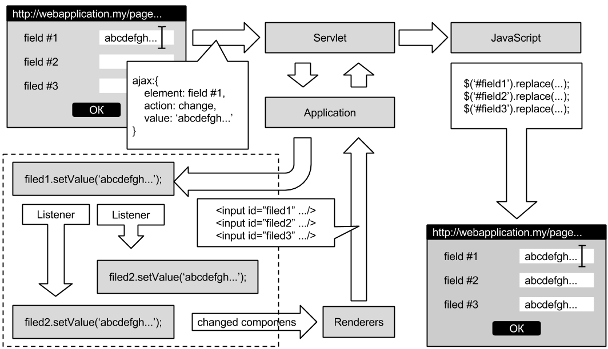

Добро пожаловать на сайт проекта WebChunks!
WebChunks это эксперимент по созданию простого и эффективного веб-фреймворка на java. Основная идея WebChunks - скрыть обработку взаимодействия пользователей с интерфейсом и получение/отправку http-запросов, предоставляя вместо этого удобный механизм событий. Это, а так же автоматическое отслеживание изменений в интерфейсе и гибкая система компонентов позволяют разработчику сконцентрироваться на решении основной задачи, забыв про верстку и обновление связанных элементов страницы.
Ниже приведена упрощенная схема работы приложения при обработке ввода в текстовом поле Field #1, значения в полях Field #2 и Field #3 автоматически синхронизируются с ним через слушатели.

{kind=link}
При этом разработчик заботится только о том, что б нужные компоненты в нужной последовательности были добавлены на форму и, если есть необходимость добавляет слушатели. Всё остальное берёт на себя WebChunks. При этом, благодаря уходу от традиционной парадигмы запрос-ответ внутреннее устройство фреймворка удалось сделать достаточно простым. WebChunks разделяет запросы на три типа: запрос к ресурсу, запрос страницы и событие от компонента, задача фреймворка - только cмаршрутизировать событие в соответствующий обработчик. Конечно, это требует написания ещё одного класса при создании компонента, но с другой стороны такой подход повышает гибкость, а сама реализация обработчика обычно достаточно тривиальна.
Подробнее об основных качествах WebChunks.
§Простота
Прежде всего, простота внутреннего устройства. WebChunks не содержит сложной внутренней логики, его задача принимать ajax-запросы и, соблюдая порядок, транслировать их в java. Это позволило значительно упростить код самого фреймворка, что во-первых снижает число потенциальных ошибок, а во-вторых упрощает их поиск в случае возникновения. Следствием этого является простота использования. Что б приступить к разработке приложения с использованием WebChunks программисту нет необходимости долго изучать документацию и вникать в тонкости его работы. Наоборот компонентый подход и событийная модель должны максимально оградить разработчика от лишней нагрузки.
Стремление к простоте стало причиной отказа от шаблонизации страниц. Шаблонизация есть, но она работает на уровне компонентов, это избавляет разработчика от необходимости верстать страницу, и позволяет делегировать эту обязанность профессиональному верстальщику или использовать готовый набор стилей для единообразного отображения компонентов на странице. Кроме снижения нагрузки на разработчика это упрощает процесс создания скинов.
Безусловно для того что бы компоненты были просты в использовании они должны быть грамотно написаны, это в определённом смысле налагает повышенную ответственность на человека разрабатывающего компоненты. С другой стороны единожды разработанный компонент позволяет его неограниченно переиспользовать. В свою очередь, система контрактов WebChunks для javascript'овой части максимально изолирует компоненты друг от друга и сводит к минимуму возможности появления side-эффектов, когда на отображение или поведение компонентов влияет порядок их загрузки или совместное/раздельное использование на странице.
В качестве иллюстрации к абзацу, ниже приведена статистка по числу строк кода в трёх основных модулях: core, simpleui и richui.
$ ./cloc-1.62.pl ./webchunks/webchunks.core/
108 text files.
104 unique files.
4 files ignored.
http://cloc.sourceforge.net v 1.62 T=0.91 s (109.6 files/s, 18366.1 lines/s)
-------------------------------------------------------------------------------
Language files blank comment code
-------------------------------------------------------------------------------
Javascript 3 1350 1339 6738
Java 91 748 2901 3361
XML 4 5 20 139
Maven 1 10 14 126
CSS 1 2 7 5
-------------------------------------------------------------------------------
SUM: 100 2115 4281 10369
-------------------------------------------------------------------------------
$ ./cloc-1.62.pl ./webchunks/webchunks.simpleui/
76 text files.
65 unique files.
2 files ignored.
http://cloc.sourceforge.net v 1.62 T=0.44 s (142.3 files/s, 9642.7 lines/s)
-------------------------------------------------------------------------------
Language files blank comment code
-------------------------------------------------------------------------------
Java 50 455 1116 1788
Javascript 10 39 313 403
Maven 1 9 14 113
XML 1 0 0 6
CSS 1 2 7 3
-------------------------------------------------------------------------------
SUM: 63 505 1450 2313
-------------------------------------------------------------------------------
$ ./cloc-1.62.pl ./webchunks/webchunks.richui/
80 text files.
76 unique files.
6 files ignored.
http://cloc.sourceforge.net v 1.62 T=0.53 s (131.2 files/s, 9111.3 lines/s)
-------------------------------------------------------------------------------
Language files blank comment code
-------------------------------------------------------------------------------
Java 57 566 1215 2210
Javascript 7 27 205 361
CSS 4 33 68 81
XML 1 0 0 63
Maven 1 0 0 31
-------------------------------------------------------------------------------
SUM: 70 626 1488 2746
-------------------------------------------------------------------------------
§Легкость
Естественно, нельзя сказать, что фреймворк, вся логика которого вынесена на серверную часть, не нагружает сервер. Однако WebChunks создавался с оглядкой на то, чтобы минимизировать эту нагрузку. Конечно, основным стремлением было снижение нагрузки на процессор, пусть и достигаемое за счёт несколько большего потребеления памяти. Хотя по результатам предварительных нагрузочных тестов при потреблении всего 4 ГБ ОЗУ и до 4х ядер intel core i7 удалось добиться среднего времени загрузки страницы с 1000 элементов в одну секунду при одновременной работе 200 пользователей. При этом оставались возможности оптимизации, например отдача ресурсов через обычный web-сервер, например apache или nginx, а так же объединение и минимизация файлов скриптов и стилей. Можно долго говорить о том, много это или мало, но очевидно, что за удобство разработки приходится чем-то платить.
§Модульность
Как уже сказано выше, WebChunks включает в себя 3 базовых модуля: webchunks.core - основные части фреймфорка, базовые интерфейсы и абстракции, webchunks.simpleui - простейшая реализация большинства абстракций а так же набор простых компонентов и webchunks.richui - дополнительный набор компонентов, построенный на базе simpleui.
Таким образом, можно создавать как модули и библиотеки расширяющие стандартный набор компонентов, так и позволяющие заменять базовую функциональность.
§Расширяемость
Одно из важнейших правил WebChunks "не быть чёрным ящиком". Внутрення структура фреймворка неоднократно перерабатывалась ради того, чтобы разделить функциональность базовых компонентов на удобные уровни абстракций. Это означает, что если у разработчика возникнет необходимость изменить поведение одного из элементов фреймворка, то для этого ему достаточно будет создать наследника с парой перегруженных методов, а не писать альтернативную реализацию интерфейса "с нуля". Множество примеров этого подхода можно найти прямо в самом фреймворке, т.к. это значительно упрощает разработку за счёт переиспользования кода.
§Тестируемось
Весьма важное качество, которого лишены большинство веб-фреймворков, поскольку они слишком завязаны на среду исполнения вебсерверов. Это приводит к тому, что для тестирования необходим запуск всего приложения. В WebChunks приложение может исполняться вне контейнера сервлетов, а значит и корректность работы страницы можно проверить при unit-тестировании в момент сборки. Так могут быть протестированы как само приложение так и отдельные страницы или компоненты. Например, можно создать компонент и, используя необходимый отрисовщик, получить его html-код, который сравнить с эталонным. Или можно заглушить загрузку/сохранение данных страницей, после чего в unit-тесте отсылать приложению события и проверять корректно ли при этом изменяются данные внутри приложения.
Более того, при создании страницы результат можно просматривать просто выгружая html и связанные ресурсы в локальный каталог без запуска вебсервера. Подробнее об этом будет рассказано в примерах.